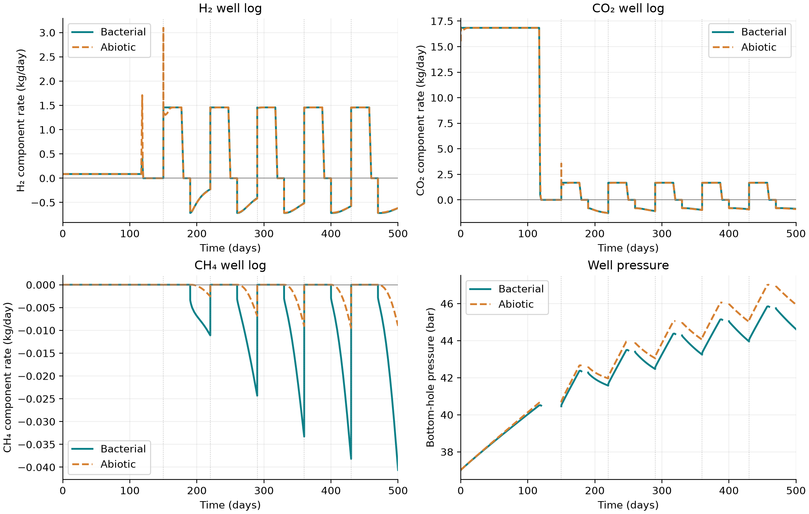
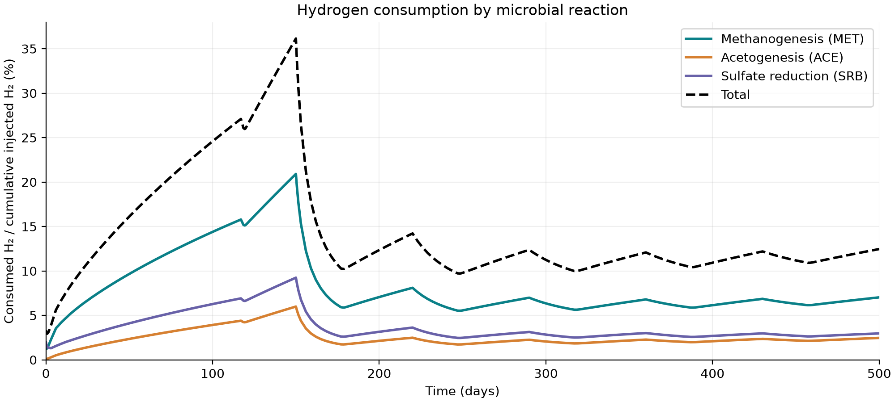
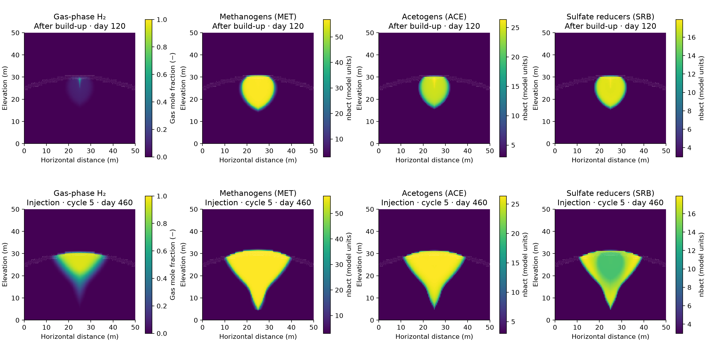

Hydrogen storage in depleted gas reservoirs¶
Compositional flow with bacterial effects · h2-biochem
The biochemistry module extends MRST compositional flow with microbial populations, reaction pathways, and aqueous tracer transport. This model family supports studying injected hydrogen mixed with residual reservoir gases. The selected 2D example uses the existing three-reaction reservoir case with residual methane and five storage cycles. A one-dimensional notebook remains available as an introduction.
What the models include¶
Soreide–Whitson gas–liquid partitioning.
Methanogenesis and acetogenesis in the selected introductory notebook.
Sulfate reduction in the corresponding multi-reaction setups.
Optional molecular diffusion, dispersion, bacterial diffusion, chemotaxis, carbonate feedback, and bioclogging where supported by the setup.
The component mixture depends on the example. The multi-reaction setups include water, hydrogen, carbon dioxide, methane, hydrogen sulfide, and acetate.
Five-cycle 2D example¶
startupH2sim
results = exampleCompositionalBacterial2DThreeReactions( ...
'numCycles', 5, 'scenarios', {'bacterial','abiotic'}, ...
'molecularDiffusion', false, 'molecularDispersion', false);
This uses the original geometry, layered rock, 0.5 m grid spacing, residual
methane, and default MET/ACE/SRB kinetic parameters. The selected comparison
disables additional transport and clogging effects. It uses MRST-owned
kinetics and requires neither PHREEQC nor Parallel Computing Toolbox.
Accepted states, wells, reports, and full setups are saved for replotting.
For this larger case, the optional AMGCL solver retains the compositional,
bacterial, and aqueous-tracer cell unknowns together. Its native thread count
is configurable through setupOptimizedLinearSolver. See Installation.
Open the 2D bacterial storage notebook →

H₂, CO₂, and CH₄ component mass rates and bottom-hole pressure for the bacterial and abiotic runs. Positive component rates denote injection; negative rates denote production. These logs use the summed well component fluxes rather than local cell compositions. Closed-well rates are zero; BHP is shown only while the well is active, because saved shut-in well records retain the preceding active-step values.¶
Hydrogen consumption by three microbial reactions¶
The saved cumulative reaction diagnostics separate methanogenesis (MET), acetogenesis (ACE), and sulfate reduction (SRB). For each reaction we plot consumed hydrogen as a percentage of cumulative hydrogen injected up to that time:
The index \(c\) denotes a grid cell and \(r\) a reaction. The numerator comes from the converged reaction source terms; the denominator integrates positive H₂ well mass rates and converts them to moles. The total curve sums the three contributions. The percentage can fall during injection because its denominator increases, even though cumulative consumed moles never decrease. Dissolution and unrecovered gas are not counted as microbial consumption.

Reaction-specific hydrogen consumption and its total over time.¶
Hydrogen plume and microbial populations¶

H₂ gas fraction and nbact for MET, ACE, and SRB after build-up
(top) and at the end of fifth-cycle injection (bottom). Each column uses
the same color limits at both times. H₂ is masked where gas saturation
is below 0.001. nbact is the model’s population variable; the plotted
values are not a calibrated cell count per volume.¶
Introductory notebook¶
simple1DBacterialExampleMetacet provides a smaller introduction to grid
construction, wells, microbial populations, and compositional transport.
Equation ownership¶
With phreeqcTimestepCoupling=false, microbial source terms are owned by
MRST. The optional PHREEQC workflows change how chemistry is closed and,
for the compositional backend, which solver owns microbial kinetics.
See PHREEQC coupling before switching backends.
Inspect state.nbact for modeled microbial populations and the appropriate
component/tracer fields for transport. Consumption means hydrogen removed by
microbial reactions; it is distinct from unrecovered gas during withdrawal.